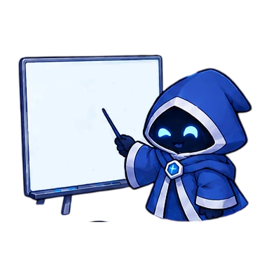

О курсе
Что это за курс, как проходят занятия и чем полезен сайт.
Что это такое?
«Итерация-8» — актуальный учебный курс проекта «Процедурная генерация игрового контента» в рамках программы ТУСУР «ГПО для школьников». Мы изучаем и разбираем алгоритмы, которые помогают создавать игровые миры и их наполнение. Хочешь присоединиться к нам или узнать больше о ТУСУРе и его проектах для школьников и студентов? Тебе сюда!
Наставники
Четыре наставника помогают разобраться с алгоритмами, собрать проект и не потеряться в организационных вопросах.
Загружаем информацию о наставниках…
Как проходят занятия
Занятия проходят в смешанном формате: как очно, так и дистанционно. Мы ведем очные занятия в корпусе ФЭТ ТУСУР и транслируем их на платформе Яндекс.Телемост. На этой же платформе мы ведем дистанционные занятия. Актуальные дни, время и формат занятий всегда указаны в расписании.
На нашем проекте работают ребята из разных часовых поясов, поэтому в расписании можно переключить отображение времени для вашего города. Если занятие переносится или меняет формат, это сразу видно в карточке.
Каждую неделю мы рассматриваем новую тему, актуальную повестку занятия также можно увидеть в его карточке.
Что есть на сайте
- Расписание — занятия по неделям, темы, аудитория и ссылки на подключение.
- Проекты и команды — кто над чем работает в текущей итерации.
- Материалы — книги, статьи, презентации и записи лекций.
- Приложения — интерактивные демонстрации: плитки Вана и генерация подземелий Rogue.
Проекты и команды
Участники могут объединяться в команды, чтобы реализовывать проекты вместе. Список команд и проектов обновляется в соответствующем разделе. Там же появляются ссылки на репозитории и демонстрации.